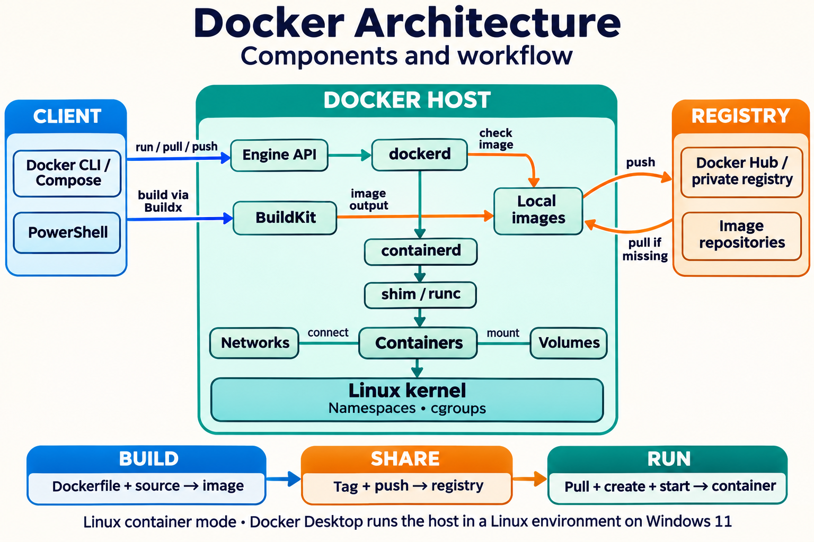
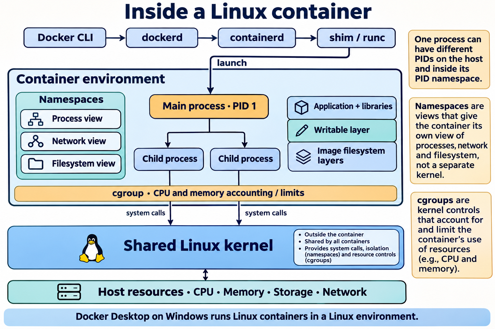
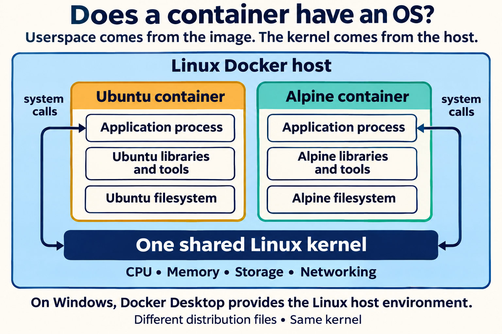

Docker foundations · Course overview
Explore the Docker course
Choose a topic to start. Each topic builds on the one before it, from the reason for containers to the Linux features and virtual machines beneath them.
Docker foundations · Topic 00
Why containers?
Imagine joining a team that builds a to-do app: a Node.js backend, a React frontend, and a database. Before you can change a line of code, you need the right runtime, database, and libraries. Topic 0 explains how containers make that setup more repeatable. There are no commands to run yet.
01 · Berry · The setup problem
“Works on my machine” is a warning sign
Your laptop, a teammate's laptop, the CI server, and production can each have a different Node.js version or dependency set. Another project on your laptop may require an older version. Small differences can change how the to-do app builds or runs.
Everyone installs and maintains dependencies separately.
One project can need a different runtime version.
CI and production may behave differently from a laptop.
02 · Ocean · Container
What is a container?
A container is a running instance of an image. It runs the app with the files and settings the image supplies, in an isolated environment. Instead of installing the app's runtime and libraries separately on every machine, the team can use the same image in each place.
For the to-do app: the backend, frontend, and database can run as separate containers. Each component gets the environment it expects, while the team shares a repeatable description of the whole app.
On Linux, container processes share the host kernel. A container is therefore different from a virtual machine, which normally has its own guest operating system. Topic 1 covers VMs, and Topic 2 explains the Linux isolation beneath containers.
03 · Gold · Image
What is an image?
An image is the reusable package a container starts from. It can contain application code, a language runtime, libraries, operating-system user-space files, and a default command. An image does not contain a separate running kernel.
Built and shared
A read-only template, often assembled in layers from a Dockerfile.
Created and run
A live instance with its own process state and writable changes.
Starting multiple containers from one image gives each of them the same starting files. Configuration, external data, CPU architecture, and host environment can still affect behavior, so teams also manage those parts deliberately.
04 · Violet · Image sources
Where do images come from?
A team can build its own image from a Dockerfile, or use an image published by someone else. A registry stores and distributes images. Docker Hub is one example; organizations may also use private registries.
An image reference names a registry, a repository within it, and often a tag for a version or variant. For example, docker.io/library/node:22-slim identifies a Node.js image on Docker Hub. A tag is a label and may later point to a newer image; a digest identifies exact image content.
No hands-on setup in Topic 0. When you are ready to run the to-do app, continue with Docker's next guide.
Source: Docker Learn · What is a container? · Docker overview
Docker foundations · Topic 01
Servers, data centers
& virtual machines
Before containers make sense, picture the computers that run them. Follow the path from a physical server, to a data center, to virtual machines sharing one host.
01 · Blue · Server
What is a server?
A server provides a service to another computer or program, called a client. The word can mean the software providing the service or the computer running that software. A server may be a physical machine or a virtual machine.
Delivers websites and APIs.
Shares files with other devices.
Stores data and responds to queries.
Reference: IBM · Data center infrastructure
02 · Teal · Data center
What is a data center?
A data center is a physical facility that houses computing equipment. It brings servers together with networking, storage, power, cooling, and physical security so applications can keep running.
Cloud connection: Cloud providers operate data centers and let customers rent computing resources without owning the building or physical servers.
Reference: IBM · What is a data center?
03 · Purple · Virtual machine
What is a virtual machine?
A virtual machine (VM) is a software-defined computer. It has virtual CPU, memory, storage, and networking, and normally runs its own operating system, called the guest OS. The physical computer beneath it is the host.
The real hardware
Provides the processor, memory, disks, and network connections.
An independent environment
Receives a share of host resources and runs its own OS and applications.
Example: One physical server can host a Linux VM for a website and another VM for a database. Each VM behaves like a separate computer, even though both use the same physical machine.
Reference: Microsoft Azure · What is a virtual machine?
04 · Orange · VM types
VM types and hypervisors
The phrase “VM types” can describe what the VM is for. A system VM runs a complete guest operating system. A process VM is a runtime for one program, such as the Java Virtual Machine (JVM). In server and cloud discussions, “VM” usually means a system VM.
A whole virtual computer
Has a guest OS; useful for servers, testing another OS, and isolated applications.
A runtime for one program
Runs a program in a managed environment. It is a different use of the word “virtual machine.”
A hypervisor creates and manages system VMs. Hypervisors have two common deployment types:
Reference: Red Hat · What is a hypervisor?
05 · Cyan · How it works
How does a VM work?
The hypervisor sits between physical resources and each guest VM. It presents virtual hardware, schedules use of the real CPU and memory, and keeps the VMs separated.
- The administrator creates a VM and assigns virtual CPU, memory, storage, and network settings.
- The hypervisor maps those virtual resources onto the physical host.
- The guest OS boots and runs applications as if it had its own computer.
- The hypervisor schedules requests and maintains separation between VMs.
References: Red Hat · Hypervisor · Microsoft Azure · VM
06 · Green · Decision
Pros and cons of virtual machines
Advantages
- Consolidation: run several workloads on one physical host.
- Isolation: give each workload its own guest OS and environment.
- Flexibility: run different operating systems on the same host.
- Provisioning: create and restore VMs more easily than setting up new hardware.
Tradeoffs
- Resource cost: every system VM needs its own guest OS, memory, and storage.
- Management: guest operating systems need patching, monitoring, and backups.
- Shared host risk: a host failure can affect several VMs at once.
- Capacity limits: too many busy VMs can compete for CPU, memory, or storage.
Remember: a VM is a complete virtual computer. Later Docker topics can build on this foundation when introducing containers.
References: Microsoft Azure · VM benefits · Red Hat · Hypervisors
Docker foundations · Topic 02
Linux processes, namespaces & cgroups
Start with the process Linux runs, then see how systemd manages services and how the kernel can isolate views and control resource use. These features work without Docker.
01 · Amber · Process
What is a Linux process?
A program is code stored on disk. A process is a running instance of that program. Linux assigns it a process ID (PID), tracks its owner and state, and accounts for CPU time and memory.
For example, php artisan migrate starts a PHP process that exits when the migration finishes. A queue worker, php artisan queue:work, usually keeps running and waiting for jobs. Both are processes.
ps -p 1 -o pid,comm
ps auxFurther reading: Linux ps manual
02 · Rose · Daemon
What is a daemon?
A daemon is a program intended to perform ongoing work in the background. It still runs as one or more ordinary Linux processes. Nginx waits for web requests, sshd waits for SSH connections, and PHP-FPM manages PHP workers.
Migration
php artisan migrate runs a task and exits.
Queue worker
php artisan queue:work waits for jobs. A service manager can supervise it in the background.
Subtle point: a modern daemon does not have to detach itself from its terminal. Under systemd, the program can stay in the foreground relative to systemd while systemd manages it in the background for users.
03 · Indigo · Service
What is a service?
A service is a function the machine provides. On many Linux systems, systemd defines how to start, stop, supervise, and report that function with a .service unit. Not every Linux distribution uses systemd.
For a Laravel queue, systemctl start laravel-queue asks systemd to read the unit and start its configured command. Linux creates the PHP process; systemd tracks its status. A unit with Restart=on-failure can restart a process after failure.
systemctl status nginx
systemctl show nginx -p MainPID -p ControlGroup
ps aux | grep '[n]ginx'These Nginx commands apply only where Nginx and systemd are installed.
Further reading: systemd.service manual
04 · Cyan · Namespaces
Namespaces change what processes see
Linux namespaces are kernel features, not Docker-specific features. A namespace gives a group of processes its own view of one part of the system. Processes in different namespaces can share the same kernel and physical host while seeing different hostnames, process IDs, networks, or mounts.
| Namespace | What it separates | Ordinary Linux use |
|---|---|---|
| PID | Process ID view | Process isolation |
| NET | Interfaces and routes | Network testing |
| MNT | Mounted filesystem view | Service filesystem sandboxing |
| USER | User and group ID mappings | Privilege separation |
| UTS | Hostname and domain name | Hostname isolation |
Try a UTS namespace without Docker
On a Linux lab machine, compare the hostname in two terminals. The first terminal creates a new UTS namespace and changes the hostname only for processes in that namespace.
hostname
sudo unshare --uts /bin/bash
hostname testing-server
hostname
exithostname
# The original hostname remains visible here.Try a network namespace without Docker
sudo ip netns add test-network
sudo ip netns list
sudo ip netns exec test-network ip addr
sudo ip netns delete test-networkThe new network namespace has its own interfaces and routing table. It will not automatically have external connectivity. Both examples use Linux tools directly, with no Docker or Kubernetes.
References: Linux namespaces manual · UTS namespaces · ip-netns manual
05 · Violet · cgroups
cgroups control and account for resources
Control groups (cgroups) are another Linux kernel feature. They organize processes into groups so the kernel can monitor and limit resource use such as CPU time and memory. cgroups do not by themselves hide processes or give them a different hostname; that is the job of namespaces.
systemd-cgls
systemd-cgtop
systemctl show nginx -p ControlGroupFor example, a systemd override for a PHP-FPM service could contain the following. The actual unit name depends on the installed PHP version and distribution.
[Service]
MemoryMax=1G
CPUQuota=100%MemoryMax=1G sets a 1 GiB memory ceiling for the unit. CPUQuota=100% allows at most the CPU time of one logical CPU. The limit applies to processes in that service's cgroup, not only its main process.
On production systems: applying a low memory limit can cause PHP-FPM workers to be killed, and restarting the service interrupts requests. Try resource limits on a lab service first.
References: Linux cgroups manual · systemd resource controls
06 · Green · Put it together
Linux, systemd, Docker, and Kubernetes
| Technology | Role |
|---|---|
| Linux kernel | Implements processes, namespaces, and cgroups. |
| systemd | Manages services and uses cgroups; it can also use namespaces for service sandboxing. |
| Docker | Manages containers and uses Linux features including namespaces and cgroups. |
| Kubernetes | On Linux nodes, orchestrates workloads through container runtimes that use these Linux features. |
Isolation
Change what a process can see.
Resource control
Track and constrain what a group uses.
Service management
Start, supervise, and organize services.
Core idea: a Linux container is made of ordinary processes with isolation and resource controls, alongside other security mechanisms. Namespaces and cgroups also work on an ordinary Linux server without Docker.
Further reading: Namespaces · cgroups · systemd sandboxing
Docker foundations · Topic 03
Virtual machines vs containers
Both let workloads share physical hardware, but they separate work at different layers. The key question is whether you need a whole guest operating system or an isolated application environment.
Slide 01 · Copper · Architecture
Where is the isolation boundary?
A VM virtualizes hardware. Each VM has virtual hardware, a guest operating system, its own kernel, and applications. A typical container packages an application and its user-space dependencies while sharing the host operating system's kernel.
Remember: a VM virtualizes a computer. A container isolates an application and its processes using the host kernel.
Sources: Microsoft Learn · Architecture · Atlassian · Comparison
Slide 02 · Sea green · Key differences
How do they behave in practice?
| Question | Virtual machine | Typical container |
|---|---|---|
| Operating system | Runs its own guest OS and kernel. | Uses the host kernel and packages needed user-space files. |
| Isolation | Usually a stronger boundary between workloads and the host. | Process isolation, with a shared-kernel boundary that needs careful hardening. |
| Startup & size | Boots an OS and commonly uses more memory and disk. | Usually starts faster and needs less overhead because no guest OS boots. |
| OS choice | Can run a different supported guest OS. | Must be compatible with the kernel it runs on. |
| Management | Patch and manage each guest OS. | Rebuild images and redeploy containers; maintain the host kernel too. |
These are architectural tendencies, not fixed performance numbers. The result depends on the workload, image, VM configuration, host, storage, and network setup.
Windows exception: Microsoft also offers Hyper-V isolated containers, which place a container in a lightweight VM for a stronger boundary. The shared-kernel column describes the common process-isolated model.
Sources: Microsoft Learn · Feature table and Hyper-V isolation · Atlassian · Pros and cons
Slide 03 · Orchid · Choosing
Which should you choose?
Start with the workload's operating-system, isolation, and deployment needs. Neither choice is automatically safer or faster in every setup.
You need a full OS
Run a different guest OS or kernel, manage an entire server environment, or use a stronger isolation boundary between tenants.
You package an app
Deploy the same app and its dependencies repeatedly, start many short-lived workloads, or iterate quickly in development and CI.
Separate server environments
Host independent operating systems for a legacy workload and a newer application on one physical machine.
To-do app components
Package its frontend, backend, and database as separate deployable services on a suitable host.
Further reading: Contabo · Containers vs virtual machines · Atlassian · Choosing and combining
Slide 04 · Moss · Together
Containers can run inside a VM
The choice is not always either/or. A cloud provider can supply a VM, then your team installs a container runtime inside that VM and runs several application containers. The VM provides a guest OS and an outer boundary; containers package and separate the applications inside it.
Takeaway: VMs and containers complement each other. Choose the boundary and operating system the workload needs, then choose how to package and operate the application.
Sources: Microsoft Learn · Containers hosted in VMs · Atlassian · Using both together · Contabo · Comparison
Docker foundations · Topic 04
Set up Docker
Choose the right Docker installation for your machine, prepare an Ubuntu lab, install Docker Engine from Docker's repository, and verify that a container runs.
Slide 01 · Teal · Choose a setup
Docker Engine or Docker Desktop?
Docker Engine
Install the engine, command-line tools, and plugins on a supported Linux host. A graphical desktop is not required.
Docker Desktop
A desktop application with a graphical interface and an included engine. On Linux, Docker Desktop runs its own VM.
References: Docker Engine installation · Docker Desktop on Linux
Slide 02 · Clay · Prepare
Prepare an Ubuntu machine
Use a supported 64-bit Ubuntu release and CPU architecture with internet access and a user who can run sudo. The commands below are for Ubuntu with systemd and APT. On a remote VPS, connect over SSH first. Check Docker's current supported versions before starting.
cat /etc/os-release
dpkg --print-architecture
command -v docker
dpkg-query -W docker.io docker-compose docker-compose-v2 docker-doc docker-buildx podman-docker containerd runc 2>/dev/nullThe last commands help identify existing installations; no output for an absent package is expected. Docker lists docker.io, standalone Compose packages, podman-docker, containerd, and runc among possible conflicts with its official packages.
Existing server: review the conflicting packages guidance and the services that depend on them before removal. Removing shared runtimes can disrupt existing workloads. Use a fresh lab if unsure.
References: Docker · Ubuntu prerequisites · Hostinger · Ubuntu setup
Slide 03 · Violet · Repository
Add Docker's APT repository
Run these in a Bash shell on a supported Ubuntu system. APT uses Docker's signing key to verify packages from the configured repository. Review the file if an existing Docker repository is already configured.
sudo apt update
sudo apt install ca-certificates curl
sudo install -m 0755 -d /etc/apt/keyrings
sudo curl -fsSL https://download.docker.com/linux/ubuntu/gpg -o /etc/apt/keyrings/docker.asc
sudo chmod a+r /etc/apt/keyrings/docker.ascsudo tee /etc/apt/sources.list.d/docker.sources <<EOF
Types: deb
URIs: https://download.docker.com/linux/ubuntu
Suites: $(. /etc/os-release && echo "${UBUNTU_CODENAME:-$VERSION_CODENAME}")
Components: stable
Architectures: $(dpkg --print-architecture)
Signed-By: /etc/apt/keyrings/docker.asc
EOF
sudo apt updateThe Suites and Architectures values are filled in from the machine. Enter EOF on its own line when copying the block.
References: Docker · Install using the APT repository · DataCamp · Ubuntu tutorial
Slide 04 · Blue · Install
Install Docker Engine and tools
Install the Engine, command-line interface, runtime, Buildx, and Compose plugin from Docker's repository.
apt-cache policy docker-ce
sudo apt install docker-ce docker-ce-cli containerd.io docker-buildx-plugin docker-compose-pluginThe daemon manages containers; the CLI sends commands to it.
The runtime component helps manage container execution.
Buildx supports builds; Compose defines multi-container applications.
APT shows the proposed packages and asks for confirmation. Read the changes before accepting, especially on an existing server.
Reference: Docker · Ubuntu installation
Slide 05 · Green · Verify
Check the service and run a container
The service normally starts automatically after installation on Ubuntu. Check its status; if it is inactive, start it and check again. Press q to leave the status view if a pager opens.
sudo systemctl status docker
# Only if the service is inactive:
sudo systemctl start docker
docker --version
sudo docker version
docker compose versiondocker --version confirms the CLI is installed. sudo docker version also checks whether the client can reach the daemon; look for both Client and Server sections.
sudo docker run --rm hello-worldDocker downloads the image if needed, starts a short-lived container, prints a confirmation, and removes the container after it exits. An image download requires network access; the image remains available locally.
Reference: Docker · Verify installation
Slide 06 · Rose · Access
Decide how to run Docker commands
By default, the Linux Docker daemon runs as root and access to its socket requires elevated privileges. The examples above use sudo.
Docker group access is powerful: membership grants root-level privileges through the daemon. Add only trusted users; Docker's rootless mode is a separate option.
If this is your own lab machine and you deliberately want to use Docker without sudo, first check that the docker group exists, then add your user:
getent group docker
# If the preceding command returns nothing:
sudo groupadd docker
sudo usermod -aG docker "$USER"Log out and back in to refresh group membership, then run docker run --rm hello-world without sudo. On a VM, a restart may be needed. This changes the user's privileges for the machine.
Reference: Docker · Linux post-installation
Slide 07 · Gold · Desktop
Use Docker Desktop on Linux
Docker Desktop is a separate installation for supported Linux desktops. It provides a graphical interface and runs its own VM, so check Docker's current distribution, architecture, desktop environment, KVM, memory, and virtualization requirements first.
- Review Docker Desktop's Linux requirements and select the guide for your distribution.
- Follow the distribution-specific package installation instructions and start Docker Desktop.
- Accept the terms when prompted and wait for the engine to start.
- Check
docker context lsanddocker versionto confirm which engine the CLI targets.
Desktop and a separately installed Engine can use different contexts, images, and containers. Running both may cause port conflicts. On Linux, Desktop normally uses the desktop-linux context while it is running.
For Windows and macOS, follow Docker's own Windows or Mac guide; the Ubuntu APT commands above do not apply.
References: Docker Desktop · Linux · Docker setup overview
Slide 08 · Indigo · Troubleshoot
If the installation does not work
| Symptom | What to check |
|---|---|
docker: command not found | Confirm the CLI package installed successfully and open a new shell if needed. |
| Cannot connect to daemon | Check sudo systemctl status docker, the active context, and whether the appropriate Engine is running. |
| Permission denied on socket | Use sudo or review the optional access setup and refresh your login session. |
| Image download fails | Check DNS, internet access, proxy settings, and registry connectivity. |
| Package unavailable | Check Ubuntu release, architecture, repository source, and sudo apt update output. |
To update packages later, refresh APT and review available Docker upgrades according to your organization's change process. Docker's Ubuntu upgrade guide also describes selecting a specific version.
Docker-published ports can interact differently with host firewall rules. Review Docker's firewall documentation before exposing services on a server.
References: Docker · Ubuntu setup · Hostinger · Troubleshooting · DataCamp · Install Docker
Docker foundations · Topic 05
Your first container on Windows 11
Docker Desktop is already installed. Start it, verify the connection, run a small test image, and then launch a web server you can view in your browser.
Slide 01 · Blue · Get ready
Start Docker Desktop
- Open Docker Desktop from the Windows Start menu. If prompted, review and accept the terms, then wait until Docker Desktop shows that the engine is running.
- Open PowerShell or Windows Terminal. The commands in this lesson work in PowerShell; you do not need to open it as administrator for a normal Desktop setup.
- Make sure Docker Desktop is using Linux containers. If Windows containers are enabled, use the Docker Desktop menu to switch to Linux containers; this example uses Linux images.
docker --version
docker versiondocker --version shows the installed command-line version. docker version should show both Client and Server details when the engine is reachable; check that the server reports Linux.
Reference: Docker · Start Desktop on Windows
Slide 02 · Teal · First container
Run hello-world
Enter the following command in PowerShell:
docker run hello-worldDocker checks for the image locally and downloads it if necessary. It creates and starts a container, which prints a message beginning “Hello from Docker!” and then exits. The first download requires internet access.
docker ps
docker ps -adocker ps shows running containers; docker ps -a also includes stopped containers, including the one just created. Its generated name will be different on each run.
Reference: Docker · Verify with hello-world
Slide 03 · Orange · Try a web server
Run Nginx and open it in your browser
This second example starts an Nginx web server in the background. It maps port 8080 on your laptop to port 80 inside the container, using a loopback address for local access.
docker run -d --name class-web -p 127.0.0.1:8080:80 nginx:alpineRuns the container in the background.
Gives this container a memorable name.
Maps local host port 8080 to container port 80.
Docker prints a container ID. Open http://127.0.0.1:8080; you should see the Nginx welcome page.
Reference: Docker · Publishing ports
Slide 04 · Purple · Inspect and clean up
See what is running
docker ps
docker logs class-web
docker imagesLook for class-web and its port mapping in docker ps. Docker Desktop's Containers view also shows running and stopped containers.
docker stop class-web
docker rm class-webStopping ends the web server; removing deletes that container. The downloaded nginx:alpine image remains, so a later run can reuse it. The earlier hello-world container remains stopped; find its generated name with docker ps -a and remove that specific name with docker rm <name> if desired.
Slide 05 · Green · Troubleshooting
If something does not work
| What you see | What to try |
|---|---|
docker is not recognized | Confirm Desktop installed successfully, then open a new PowerShell window. |
| Cannot connect to Docker | Start Docker Desktop, wait for the engine, then run docker version again. |
| Image or platform mismatch | Switch Docker Desktop to Linux containers and check the server information in docker version. |
| Port 8080 is already in use | Choose another host port, for example -p 127.0.0.1:8081:80, and open http://127.0.0.1:8081. |
| Container name already in use | Inspect docker ps -a; choose a different name or remove your earlier stopped demonstration container. |
| Image cannot download | Check internet, DNS, proxy, and access to Docker Hub. |
References: Docker Desktop · Windows · Docker Learn · Run your first container
Docker foundations · Topic 06
Docker fundamentals and architecture
Follow a Docker command from the client to a running container. Explore the components involved, the objects Docker manages, and how a team builds and shares an image. The examples use Docker Desktop on Windows 11 with Linux containers.
Section 1
What is Docker
Docker provides tools to package applications and run them in containers. Packaging the application with its dependencies reduces differences between development, testing, and production. Linux containers share the Docker host’s kernel, which helps keep their resource overhead low.
Dockerfile
A text file containing build instructions, such as selecting a base image and copying application files.
Image
A reusable, read-only template containing filesystem layers and configuration used to create containers.
Container
An instance created from an image, with its own writable layer and process environment. It can be running or stopped.
Follow the lifecycle. Build an image from a Dockerfile, push it to a registry, pull it onto another compatible host, and create a container from it. Docker Hub is a hosted registry for finding and sharing images.
Introduction adapted from What is Docker? — GeeksforGeeks.
Components
Who handles a Docker command?
Client
The docker CLI in PowerShell sends requests through the Engine API. The active Docker context selects the endpoint. docker context ls shows which one is selected.
Docker host
The host runs dockerd, the daemon that manages containers, images, networks, and volumes. In Docker Desktop’s Linux container mode, the daemon runs in a Linux environment on your laptop.
Registry
Docker Hub and private registries distribute images. In nginx:alpine, nginx names the repository and alpine selects a tag. The short name resolves to Docker Hub’s official Nginx repository.
Compare two commands. docker --version prints the client version locally. docker ps asks the selected daemon which containers are running on its host.
Component guides from GeeksforGeeks, Ravi Patel, and Megha Sharma.
Interactive architecture
Watch Docker work
Choose a workflow and follow the moving marker. Each highlighted connection shows the next request, image transfer, or runtime action.
Your terminal
Linux environment · Docker Desktop on Windows 11
Image distribution
↓ Buildx
docker run -d --name class-web -p 127.0.0.1:8080:80 nginx:alpine
This is a teaching simulation of Linux containers using the default local builder. Volumes are optional in the Nginx example. A shim supervises the process after runc finishes launching it.
Docker architecture at a glance


Follow the arrows from the client through the Docker host. The registry stores images for sharing, while the host creates and runs containers.
Read the complete diagram
Build. From PowerShell, the Docker CLI uses Buildx to submit a Dockerfile and build context to BuildKit. With the default local builder, the resulting image becomes available in the host’s image store. Other builder configurations can export directly to a registry.
Share. Tag and push an image to a repository in Docker Hub or a private registry. Another host can pull that image into its own image store.
Run. The CLI sends the request through the Engine API to dockerd. With the default pull policy, Docker pulls the image if it is missing locally, prepares a container and its networking, and coordinates its launch through containerd. The shim supervises the container process, while runc sets up and starts it.
Host resources. Containers connect to networks and can mount volumes for persistent data. The Linux kernel supplies namespaces for isolation and cgroups for resource control. Docker Desktop provides the Linux environment on Windows 11.
Docker objects
What does the host keep?
| Object | Role in the class web demo | Inspect it |
|---|---|---|
| Image | The local Nginx filesystem layers and startup configuration can supply many containers. | docker image ls |
| Container | class-web has its own ID, writable layer, and lifecycle. Its record remains after a stop until it is removed. | docker ps -a |
| Network | The container joins a Docker network. Publishing a port makes its web server reachable from the laptop. | docker network inspect bridge |
| Volume | A named volume can keep database files across container replacements. The Nginx demo needs no named volume. | docker volume ls |
While class-web is running, compare its entry in docker ps with docker image ls. After the Topic 5 cleanup, the container disappears and the image is available for the next run.
Nitiz Sharma’s component guide · Docker networks, volumes, and images on DEV
Build and delivery
How does a team ship its own image?
Suppose your team adds an index.html to the class web demo. Save these two lines as Dockerfile next to that page, and build from that directory.
FROM nginx:alpine COPY index.html /usr/share/nginx/html/index.html
- Build.
docker build -t class-site:1 .gives the builder access to the current directory. Buildx submits the build to BuildKit, which reads the Dockerfile, reuses available layers, and produces the image. - Tag and push. To share it, tag
class-site:1with a repository you can publish to. For a Docker Hub account namedexampleteam, the reference could beexampleteam/class-site:1. After authenticating, the team pushes that reference to its registry. - Pull and run. A second Docker host pulls the published image. Each container created from that image starts with the same page. A new page release requires a new build and a replacement container.
With a backend and database, Compose can describe the services, their shared network, and a database volume in one file. The Engine manages the resulting containers on the selected host.
Check your understanding
Predict the second run
You stop and remove class-web, leave nginx:alpine on the same host, then run the original command again. With the default pull policy, which component can Docker skip, and what gets created again?
Show the answer
Docker can skip the registry because the tagged image is local. It creates a fresh container with a new ID and writable layer, publishes its port, and starts a new Nginx process. Select “Image already on host” in the animated workflow to follow this path.
Further study · Watch the supplied YouTube video · Understanding Docker Architecture and Workflow on Medium
Docker foundations · Topic 07
Basic Docker commands
Put the architecture into practice. Run a web container, inspect it, manage its lifecycle, then build your own image. Examples use PowerShell on Windows 11 and Docker Desktop with Linux containers.
Section 1 · Getting started
Read and check a Docker command
Open PowerShell with Docker Desktop running in Linux container mode. Work through the lesson in order. The exercise uses commands-web and port 8081 so it can run alongside the Topic 5 demo.
docker --version docker version docker info docker run --help
--version reports the CLI version. docker version includes client and server details, while docker info describes the selected Engine. If server details fail, check Docker Desktop and the selected connection with docker context ls.
Command structure. docker run [OPTIONS] IMAGE [COMMAND] places options before the image. docker run and docker container run are equivalent. docker ps is the short form of docker container ls.
Read DataCamp’s Docker commands guide and the Docker CLI reference.
Section 2 · Images and running containers
Pull an image and run Nginx
docker pull nginx:alpine docker image ls docker run -d --name commands-web -p 127.0.0.1:8081:80 nginx:alpine docker ps
Open the local Nginx page. You should see its welcome page. The run command prints a container ID, and docker ps should include commands-web.
| Part | Meaning |
|---|---|
-d | Run in the background and return to PowerShell. |
--name commands-web | Assign a name for later commands. |
-p 127.0.0.1:8081:80 | Publish container port 80 on the laptop’s loopback address at port 8081. |
nginx:alpine | Select the Nginx repository and its alpine tag. |
pull downloads an image. run creates a new container and starts it, pulling a missing image under the default policy. If the name already exists, inspect it with docker ps -a and use docker start commands-web to start that stopped container.
See the docker run reference and GeeksforGeeks command examples.
Section 3 · Inspect and enter
Find out what the container is doing
docker ps -a docker logs --tail 20 commands-web docker inspect commands-web docker port commands-web docker stats --no-stream commands-web
ps -a includes stopped containers. logs reads captured output, inspect returns detailed metadata, port lists published ports, and stats --no-stream gives one resource-usage snapshot. Refresh the web page before reading the logs to generate a request.
Use docker logs -f commands-web to follow new output. Press Ctrl + C to stop following the logs.
docker exec -it commands-web sh
ls /usr/share/nginx/html exit
exec starts an additional command in an existing running container. -i keeps input open and -t allocates a terminal. This Alpine image includes sh. Exiting this extra shell leaves Nginx running.
See Docker’s exec reference and Ravi Patel’s command examples.
Section 4 · Container lifecycle
Stop, start, and restart
start takes the stopped container back to running. restart stops and starts it. rm removes the stopped container.docker stop commands-web docker ps docker ps -a docker start commands-web docker restart commands-web
After stop, the web page is unavailable and the container appears in ps -a. After start, refresh the browser. The container retains its ID, configuration, and writable layer across these operations.
Why does a second docker run report a name conflict?
A stopped container still owns its name. Starting it reuses that container. Creating another container requires a different name or removal of the existing one.
See GeeksforGeeks lifecycle commands and Docker’s run and start behavior.
Section 6 · Networks and volumes
Explore the other Docker objects
These commands create an empty practice network and volume. Attaching them to containers is a separate operation.
docker network create commands-net docker network ls docker network inspect commands-net docker volume create commands-data docker volume ls docker volume inspect commands-data
A network connects containers. A named volume stores data independently of a container’s writable layer. inspect shows the configuration of each object. On Docker Desktop, a volume’s mount path belongs to the Linux environment.
See DataCamp’s network and volume commands and Ravi Patel’s command collection.
Section 7 · Cleanup and quick reference
Clean up the practice resources
docker stop commands-web docker rm commands-web docker ps -a
rm removes the container and its writable layer. The Nginx image remains available for future containers.
docker stop commands-site-web docker rm commands-site-web docker image rm commands-site:1 docker network rm commands-net docker volume rm commands-data docker system df
Run only the cleanup commands for resources you created. Removing a volume deletes its stored data. If you added a Docker Hub tag, that local reference can be removed with docker image rm YOUR_USERNAME/commands-site:1. system df reports Docker disk usage.
What does docker system prune remove?
docker system prune performs a broader cleanup of stopped containers, unused networks, dangling images, and unused build cache. It asks for confirmation. -a extends image cleanup to all unused images, and --volumes includes unused anonymous volumes. Review the scope before confirming.
| Goal | Command pattern |
|---|---|
| Find help | docker COMMAND --help |
| List images | docker image ls or docker images |
| List containers | docker ps -a |
| Create and start | docker run [OPTIONS] IMAGE |
| Start an existing container | docker start CONTAINER |
| Read output | docker logs CONTAINER |
| Run an extra command | docker exec CONTAINER COMMAND |
| Remove a stopped container | docker rm CONTAINER |
| Remove a local image reference | docker image rm IMAGE or docker rmi IMAGE |
Class check · a container is missing from docker ps. What next?
Run docker ps -a to include stopped containers, then inspect its logs. Use docker start when you want to start the existing container again.
See Docker’s exact prune behavior and the Coursera quick reference.
Docker foundations · Topic 08
Container is a process
A running Linux container starts with a main process in an isolated environment. That process can create child processes, and all of them use the Docker host’s Linux kernel.
Image
Filesystem layers and startup configuration.
Running container
Processes using those files within configured isolation and resource controls.
Stopped container
Docker keeps its metadata and writable layer for a later start.
Based on Docker’s container introduction and iximiuz Labs’ process tutorial.
Topic 08 · Inside the container
Processes, files, and a shared kernel


Namespaces and cgroups are implemented by the kernel. The boundary in this illustration groups the settings applied to the processes. The runtime configures the environment, and the shim supervises the container process after launch.
Architecture concepts from IBM’s container overview.
Topic 08 · Process tree
One container can contain several processes
Nginx uses a master process and workers. In the usual private PID namespace, the container’s initial process has PID 1. The Docker host also assigns that process a PID in its own namespace.
Container PID 7 ↔ Host PID 4319
Container PID 8 ↔ Host PID 4320
docker exec adds a process to a running container’s environment. With --init, a small init process becomes PID 1 and launches the application beneath it.
See Docker’s process-management guide and iximiuz Labs’ host-process investigation.
Topic 08 · Host PID and container PID
Same process, two PID views
A PID is a process identifier. Linux assigns process IDs within PID namespaces, so a process can have a different number when viewed from the Docker host and from inside its container.
On the Docker host
The Nginx master might have PID 4312. The host can see container processes alongside other Linux processes.
Inside the container
The same Nginx master has PID 1 in this container’s private PID namespace. Workers have their own local PIDs.
| Process | Host PID | PID inside container |
|---|---|---|
| Nginx master | 4312 | 1 |
| Nginx worker | 4319 | 7 |
| Nginx worker | 4320 | 8 |
These are illustrative values. Each row describes one process. A second container can also have a PID 1 because it has a separate PID namespace.
docker inspect --format '{{.State.Pid}}' process-demodocker top process-demo docker exec process-demo ps
Run these after creating process-demo in the student exercise. On Windows Docker Desktop, “host PID” refers to its Linux environment. This example uses Docker’s default private PID namespace.
Topic 08 · Kernel mechanisms
What makes the process a container?
| Mechanism | What it supplies |
|---|---|
| Namespaces | Separate views of resources such as process IDs, network interfaces, mount points, and hostnames. |
| cgroups | Resource accounting and configured controls for CPU, memory, and other resources. |
| Container filesystem | Image layers plus a writable layer. Volumes and bind mounts can provide additional data. |
| Security settings | Capabilities, seccomp, and applicable security policies restrict available privileges and operations. |
The kernel schedules these processes alongside other workloads. A container shares the host kernel while using its own userspace files and libraries. On Windows 11 with Docker Desktop’s Linux container mode, that host kernel runs inside the managed Linux environment.
See IBM’s explanation of OS virtualization and Docker’s kernel and filesystem explanation.
Topic 08 · Student exercise
Inspect the same workload from two views
With Docker Desktop running, open PowerShell and create a fresh demo container. This exercise uses the name process-demo.
docker run -d --name process-demo nginx:alpine
docker top process-demo
docker inspect --format '{{.State.Pid}}' process-demodocker exec process-demo ps
Find the Nginx master and workers. Compare the main process’s host PID from inspect with PID 1 in the container view. The temporary ps command may appear too.
On a native Linux Docker host, you can also examine that host PID with ps and /proc. With Docker Desktop on Windows, the returned PID belongs to its Linux environment. Run the host-level portion of the linked lab on its Linux playground.
Exercise adapted from Containers are processes — iximiuz Labs.
Topic 08 · Lifecycle
The main process controls the running state
When the main process exits, the container stops. A configured restart policy may start it again. The PID 1 process also needs to handle signals and reap exited children, either directly or through an init process.
docker stop process-demo
docker ps -a --filter name=process-demo
docker inspect --format '{{.State.Status}}' process-demo
docker rm process-demostop sends the configured stop signal to the main process. If it does not exit within the grace period, Docker sends SIGKILL. Removing this stopped container deletes its writable layer.
Check your understanding · does closing an exec shell stop Nginx?
Exiting a shell opened with docker exec -it process-demo sh ends that extra process. Nginx continues while its main process is running. By contrast, if a shell is the container’s main process, exiting it ends that container’s run.
See Docker’s stop behavior and main-process responsibilities.
Docker foundations · Topic 09
Does a container have an OS?
A Linux container can include a distribution’s userspace files—libraries, utilities, and configuration. Its processes use the Linux kernel provided by the Docker host.
Userspace
The application, language runtime, libraries, shell, and other files included in the image.
Kernel
The running core that schedules processes, manages memory, handles system calls, and controls access to hardware.
“Ubuntu container” describes an environment built from Ubuntu files. A traditional Ubuntu virtual machine boots a guest kernel as part of its own operating system.
Discussion prompt from r/devops. Further reading includes the accessible introduction to Mr.PlanB’s member-only article.
Topic 09 · Image contents
Why do images have distribution names?
| Image starting point | What it provides | What you add |
|---|---|---|
| Ubuntu or Debian | A distribution root filesystem with its selected tools and libraries. | Your application and required packages. |
| Alpine | A compact userspace, typically including BusyBox tools and musl libc. | Your application and compatible dependencies. |
FROM scratch | An empty starting point for the image filesystem. | The executable and every runtime file it needs. |
The image determines which commands and libraries exist. A shell, package manager, or /etc/os-release file may be absent from a minimal image. The program still uses the host kernel.
Installing packages updates the container’s userspace files. Updating the running kernel is a host operation. Application binaries must also be compatible with the kernel interfaces and CPU architecture they run on.
Topic 09 · Architecture image
Two distributions, one host kernel


In the standard Linux container setup shown here, both applications call the same running kernel. Docker Desktop supplies a Linux host environment for Linux containers on Windows.
See RisingStack’s shared-kernel explanation and Docker’s explanation of containers on Windows and macOS.
Topic 09 · Student exercise
Ask two different questions
With Docker Desktop running in Linux container mode, run these commands in PowerShell. Each command creates a temporary container and removes it when the command finishes.
docker run --rm ubuntu:24.04 sh -c "cat /etc/os-release; uname -r"
docker run --rm alpine:3.22 sh -c "cat /etc/os-release; uname -r"
docker info --format '{{.KernelVersion}}'/etc/os-release
Describes the distribution files in the container. Expect Ubuntu in the first run and Alpine in the second.
uname -r
Reports the running kernel release. On the same standard Docker host, expect the same release for both containers and the Docker host.
Compare the actual strings from your machine. On Windows, this is Docker Desktop’s Linux kernel version. The downloaded images remain cached after these temporary containers exit.
See the uname manual and the distribution-versus-kernel discussion.
Topic 09 · Terminology
Application container, OS container, container OS
Application container
Packages a service and its dependencies. A Docker Nginx container can run a master process and workers while serving one application role.
OS / system container
Provides a broader userspace environment, often with an init system and multiple services. Linux system containers such as LXC share the host kernel.
Container host OS
An operating system designed to run container workloads. AWS Bottlerocket is an example and supplies the host kernel and supporting software.
App + dependencies
Init + services + userspace
Shared Linux kernel + host services
Terminology from RisingStack and Eyal Estrin’s DEV article. Host OS example confirmed by AWS Bottlerocket.
Topic 09 · Connect to Topic 8
Who does the operating-system work?
| Responsibility | Handled by |
|---|---|
| CPU scheduling, memory management, system calls | The shared host kernel. |
| Starting and monitoring container workloads | Docker, containerd, the shim, and the configured runtime. |
| Application logic and child-process cleanup | The application and its process parents; an init process can help reap orphaned children. |
| Files, libraries, and available tools | The image’s userspace plus runtime mounts and the container’s writable layer. |
Check · Ubuntu and Alpine report different distribution names but the same kernel release. Why?
Their filesystem contents come from different images. Both containers run processes on the same Linux Docker host, so both report its kernel release.
Check · does an Ubuntu image on Windows boot an Ubuntu kernel?
Docker Desktop provides the Linux environment and kernel. The Ubuntu image supplies the userspace files used by the container’s processes.
Connect this with Topic 8’s process tree and Docker’s main-process responsibilities.